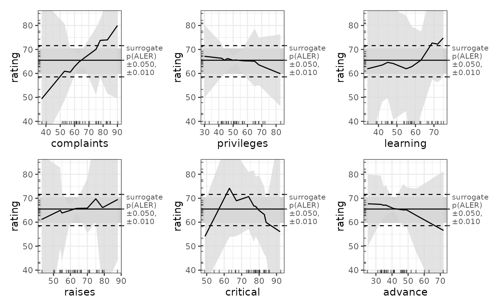

A ModelBoot S7 object contains full-model bootstrapped statistics and ALE data for a trained model. Full-model bootstrapping (as distinct from data-only bootstrapping) retrains a model for each bootstrap iteration. Thus, it can be rather slow, though it is much more reliable. However, for obtaining bootstrapped ALE data, plots, and statistics, full-model bootstrapping as provided by ModelBoot is only necessary for models that have not been developed by cross-validation. For cross-validated models, it is sufficient (and much faster) to create a regular [ALE()] object with bootstrapping by setting the boot_it argument in its constructor. In fact, full-model bootstrapping with ModelBoot is often infeasible for slow machine-learning models trained on large datasets, which should rather be cross-validated to assure their reliability. However, for models that have not been cross-validated, full-model bootstrapping with ModelBoot is necessary for reliable results. Further details follow below; see also vignette('ale-statistics').
Usage
ModelBoot(
model,
data = NULL,
...,
model_call_string = NULL,
model_call_string_vars = character(),
parallel = "all",
model_packages = NULL,
y_col = NULL,
positive = TRUE,
pred_fun = function(object, newdata, type = pred_type) {
stats::predict(object =
object, newdata = newdata, type = type)
},
pred_type = "response",
boot_it = 100,
boot_alpha = 0.05,
boot_centre = "mean",
seed = 0,
output_model_stats = TRUE,
output_model_coefs = TRUE,
output_ale = TRUE,
output_boot_data = FALSE,
ale_options = list(),
ale_p = "auto",
tidy_options = list(),
glance_options = list(),
silent = FALSE
)Arguments
- model
Required. See documentation for
ALE()- data
dataframe. Dataset to be bootstrapped. This must be the same data on which the
modelwas trained. If not provided,ModelBoot()will try to detect it automatically. For non-standard models,datashould be provided.- ...
not used. Inserted to require explicit naming of subsequent arguments.
- model_call_string
character(1). If
NULL(default), theModelBoottries to automatically detect and construct the call for bootstrapped datasets. If it cannot, the function will fail early. In that case, a character string of the full call for the model must be provided that includesboot_dataas the data argument for the call. See examples.- model_call_string_vars
character. Names of variables included in
model_call_stringthat are not columns indata. If any such variables exist, they must be specified here or else parallel processing may produce an error. If parallelization is disabled withparallel = 0, then this is not a concern. See documentation for themodel_packagesargument inALE().- parallel, model_packages
See documentation for
ALE()- y_col, pred_fun, pred_type
See documentation for
ALE(). Used to calculate bootstrapped performance measures. If left at their default values, then the relevant performance measures are calculated only if these arguments can be automatically detected. Otherwise, they should be specified.- positive
any single atomic value. If the model represented by
modelormodel_call_stringis a binary classification model,positivespecifies the 'positive' value ofy_col(the target outcome), that is, the value of interest that is consideredTRUE; any other value ofy_colis consideredFALSE. This argument is ignored if the model is not a binary classification model. For example, if 2 meansTRUEand 1 meansFALSE, then setpositive = 2.- boot_it
non-negative integer(1). Number of bootstrap iterations for full-model bootstrapping. For bootstrapping of ALE values, see details to verify if
ALE()with bootstrapping is not more appropriate thanModelBoot(). Ifboot_it = 0, then the model is run as normal once on the fulldatawith no bootstrapping.- boot_alpha
numeric(1) from 0 to 1. Alpha for percentile-based confidence interval range for the bootstrap intervals; the bootstrap confidence intervals will be the lowest and highest
(1 - 0.05) / 2percentiles. For example, ifboot_alpha = 0.05(default), the intervals will be from the 2.5 and 97.5 percentiles.- boot_centre
character(1) in c('mean', 'median'). When bootstrapping, the main estimate for the ALE y value is considered to be
boot_centre. Regardless of the value specified here, both the mean and median will be available.- seed
integer. Random seed. Supply this between runs to assure identical bootstrap samples are generated each time on the same data. See documentation for
ALE()for further details.- output_model_stats
logical(1). If
TRUE(default), return overall model statistics usingbroom::glance()(if available formodel) and bootstrap-validated statistics ifboot_it > 0.- output_model_coefs
logical(1). If
TRUE(default), return model coefficients usingbroom::tidy()(if available formodel).- output_ale
logical(1). If
TRUE(default), return ALE data and statistics.- output_boot_data
logical(1). If
TRUE, return the full raw data for each bootstrap iteration, specifically, the bootstrapped models and the model row indices. DefaultFALSEdoes not return this large, detailed data.- ale_options, tidy_options, glance_options
list of named arguments. Arguments to pass to the
ALE()constructor whenale = TRUE,broom::tidy()whenmodel_coefs = TRUE, orbroom::glance()whenmodel_stats = TRUE, respectively, beyond (or overriding) their defaults. Note: to obtain p-values for ALE statistics, see theale_pargument.- ale_p
Same as the
p_valuesargument for theALE()constructor; see documentation there. This argument overrides thep_valueselement of theale_optionsargument.- silent
See documentation for
ALE()
Value
An object of class ALE with properties model_stats, model_coefs, ale, model_stats, boot_data, and params.
Properties
- model_stats
tibbleof bootstrapped results frombroom::glance().NULLifmodel_statsargument isFALSE. In general, onlybroom::glance()results that make sense when bootstrapped are included, such asdfandadj.r.squared. Results that are incomparable across bootstrapped datasets (such asaic) are excluded. In addition, certain model performance measures are included; these are bootstrap-validated with the .632 correction (Efron & Tibshirani 1986) (NOT the .632+ correction):For regression (numeric prediction) models:
mae: mean absolute error (MAE)sa_mae: standardized accuracy of the MAE referenced on the mean absolute deviationrmse: root mean squared error (RMSE)sa_rmse: standardized accuracy of the RMSE referenced on the standard deviation
For binary or categorical classification (probability) models:
auc: area under the ROC curve
- model_coefs
A
tibbleof bootstrapped results frombroom::tidy().NULLifmodel_coefsargument isFALSE.- ale
A list of bootstrapped ALE results using default
ALE()settings unless if overridden withale_options.NULLifaleargument isFALSE. Elements are:- boot_data
A
tibbleof bootstrap results. Each row represents a bootstrap iteration.NULLifboot_dataargument isFALSE. The columns are:* `it`: the specific bootstrap iteration from 0 to `boot_it` iterations. Iteration 0 is the results from the full dataset (not bootstrapped). * `row_idxs`: the row indexes for the bootstrapped sample for that iteration. To save space, the row indexes are returned rather than the full datasets. So, for example, iteration i's bootstrap sample can be reproduced by `data[ModelBoot_obj@boot_data$row_idxs[[2]], ]` where `data` is the dataset and `ModelBoot_obj` is the result of `ModelBoot()`. * `model`: the model object trained on that iteration. * `ale`: the results of `ALE()` on that iteration. * `tidy`: the results of `broom::tidy(model)` on that iteration. * `stats`: the results of `broom::glance(model)` on that iteration. * `perf`: performance measures on the entire dataset. These are the measures specified above for regression and classification models.- params
Parameters used to calculate bootstrapped data. Most of these repeat the arguments passed to
ModelBoot(). These are either the values provided by the user or used by default if the user did not change them but the following additional objects created internally are also provided:
Full-model bootstrapping
No modelling results, with or without ALE, should be considered reliable without appropriate validation. For ALE, both the trained model itself and the ALE that explains the trained model must be validated. ALE must be validated by bootstrapping. The trained model might be validated either by cross-validation or by bootstrapping. For ALE that explains trained models that have been developed by cross-validation, it is sufficient to bootstrap just the training data. That is what the ALE object does with its boot_it argument. However, unvalidated models must be validated by bootstrapping them along with the calculation of ALE; this is what the ModelBoot object does with its boot_it argument.
ModelBoot() carries out full-model bootstrapping to validate models. Specifically, it:
Creates multiple bootstrap samples (default 100; the user can specify any number);
Creates a model on each bootstrap sample;
Calculates overall model statistics, variable coefficients, and ALE values for each model on each bootstrap sample;
Calculates the mean, median, and lower and upper confidence intervals for each of those values across all bootstrap samples.
References
Okoli, Chitu. 2023. “Statistical Inference Using Machine Learning and Classical Techniques Based on Accumulated Local Effects (ALE).” arXiv. doi:10.48550/arXiv.2310.09877.<
Efron, Bradley, and Robert Tibshirani. "Bootstrap methods for standard errors, confidence intervals, and other measures of statistical accuracy." Statistical science (1986): 54-75. doi:10.1214/ss/1177013815
Examples
# attitude dataset
attitude
#> rating complaints privileges learning raises critical advance
#> 1 43 51 30 39 61 92 45
#> 2 63 64 51 54 63 73 47
#> 3 71 70 68 69 76 86 48
#> 4 61 63 45 47 54 84 35
#> 5 81 78 56 66 71 83 47
#> 6 43 55 49 44 54 49 34
#> 7 58 67 42 56 66 68 35
#> 8 71 75 50 55 70 66 41
#> 9 72 82 72 67 71 83 31
#> 10 67 61 45 47 62 80 41
#> 11 64 53 53 58 58 67 34
#> 12 67 60 47 39 59 74 41
#> 13 69 62 57 42 55 63 25
#> 14 68 83 83 45 59 77 35
#> 15 77 77 54 72 79 77 46
#> 16 81 90 50 72 60 54 36
#> 17 74 85 64 69 79 79 63
#> 18 65 60 65 75 55 80 60
#> 19 65 70 46 57 75 85 46
#> 20 50 58 68 54 64 78 52
#> 21 50 40 33 34 43 64 33
#> 22 64 61 52 62 66 80 41
#> 23 53 66 52 50 63 80 37
#> 24 40 37 42 58 50 57 49
#> 25 63 54 42 48 66 75 33
#> 26 66 77 66 63 88 76 72
#> 27 78 75 58 74 80 78 49
#> 28 48 57 44 45 51 83 38
#> 29 85 85 71 71 77 74 55
#> 30 82 82 39 59 64 78 39
## ALE for generalized additive models (GAM)
## GAM is tweaked to work on the small dataset.
gam_attitude <- mgcv::gam(rating ~ complaints + privileges + s(learning) +
raises + s(critical) + advance,
data = attitude)
summary(gam_attitude)
#>
#> Family: gaussian
#> Link function: identity
#>
#> Formula:
#> rating ~ complaints + privileges + s(learning) + raises + s(critical) +
#> advance
#>
#> Parametric coefficients:
#> Estimate Std. Error t value Pr(>|t|)
#> (Intercept) 36.97245 11.60967 3.185 0.004501 **
#> complaints 0.60933 0.13297 4.582 0.000165 ***
#> privileges -0.12662 0.11432 -1.108 0.280715
#> raises 0.06222 0.18900 0.329 0.745314
#> advance -0.23790 0.14807 -1.607 0.123198
#> ---
#> Signif. codes: 0 ‘***’ 0.001 ‘**’ 0.01 ‘*’ 0.05 ‘.’ 0.1 ‘ ’ 1
#>
#> Approximate significance of smooth terms:
#> edf Ref.df F p-value
#> s(learning) 1.923 2.369 3.761 0.0312 *
#> s(critical) 2.296 2.862 3.272 0.0565 .
#> ---
#> Signif. codes: 0 ‘***’ 0.001 ‘**’ 0.01 ‘*’ 0.05 ‘.’ 0.1 ‘ ’ 1
#>
#> R-sq.(adj) = 0.776 Deviance explained = 83.9%
#> GCV = 47.947 Scale est. = 33.213 n = 30
# \donttest{
# Full model bootstrapping
# For speed, these examples use retrieve_rds() to load pre-created objects
# from an online repository.
# To run the code yourself, execute the code blocks directly.
serialized_objects_site <- "https://github.com/tripartio/ale/raw/main/download"
# Create ALE data
mb_gam_attitude <- retrieve_rds(
# For speed, load a pre-created object by default.
c(serialized_objects_site, 'mb_gam_attitude.0.5.2.rds'),
{
# To run the code yourself, execute this code block directly.
# For standard models like lm that store their data,
# there is no need to specify the data argument.
# 100 bootstrap iterations by default.
ModelBoot(gam_attitude)
}
)
# # If the model is not standard, supply model_call_string with 'data = boot_data'
# # in the string instead of the actual dataset name (in addition to the actual dataset
# # as the 'data' argument directly to the `ModelBoot` constructor).
# mb_gam_attitude <- ModelBoot(
# gam_attitude,
# data = attitude, # the actual dataset
# model_call_string = 'mgcv::gam(
# rating ~ complaints + privileges + s(learning) +
# raises + s(critical) + advance,
# data = boot_data # required for model_call_string
# )'
# )
# Model statistics and coefficients
mb_gam_attitude@model_stats
#> # A tibble: 9 × 7
#> name boot_valid conf.low median mean conf.high sd
#> <chr> <dbl> <dbl> <dbl> <dbl> <dbl> <dbl>
#> 1 df NA 8.36 17.0 15.8 21.0 4.08
#> 2 df.residual NA 9.00 13.0 14.2 21.6 4.08
#> 3 nobs NA 30 30 30 30 0
#> 4 adj.r.squared NA 0.746 1.000 0.945 1 0.0832
#> 5 npar NA 23 23 23 23 0
#> 6 mae 12.9 4.50 NA NA 62.6 15.0
#> 7 sa_mae 0.307 -2.00 NA NA 0.769 0.772
#> 8 rmse 16.3 5.51 NA NA 79.4 19.5
#> 9 sa_rmse 0.332 -2.08 NA NA 0.786 0.754
mb_gam_attitude@model_coefs
#> # A tibble: 2 × 6
#> term conf.low median mean conf.high std.error
#> <chr> <dbl> <dbl> <dbl> <dbl> <dbl>
#> 1 s(learning) 1.00 7.94 6.10 9.00 3.12
#> 2 s(critical) 1.74 4.34 4.69 8.96 2.24
# Plot ALE
plot(mb_gam_attitude)
#> Warning: Ignoring unknown parameters: `label.size`

# Retrieve ALE data
get(mb_gam_attitude, type = 'boot') # bootstrapped
#> $complaints
#> # A tibble: 10 × 7
#> complaints.ceil .n .y .y_lo .y_mean .y_median .y_hi
#> <dbl> <int> <dbl> <dbl> <dbl> <dbl> <dbl>
#> 1 37 1 49.4 29.9 49.4 47.9 90.8
#> 2 53 3 60.9 48.7 60.9 58.6 80.8
#> 3 57 3 60.5 54.6 60.5 59.7 70.4
#> 4 60 3 62.8 59.3 62.8 62.4 69.5
#> 5 63 4 64.7 61.8 64.7 64.6 68.1
#> 6 67 3 66.5 62.5 66.5 66.3 71.5
#> 7 75 4 70.0 51.2 70.0 71.2 79.0
#> 8 78 3 73.8 58.4 73.8 73.4 82.7
#> 9 83 3 74.0 51.6 74.0 74.8 89.7
#> 10 90 3 79.9 49.6 79.9 80.9 99.6
#>
#> $privileges
#> # A tibble: 10 × 7
#> privileges.ceil .n .y .y_lo .y_mean .y_median .y_hi
#> <dbl> <int> <dbl> <dbl> <dbl> <dbl> <dbl>
#> 1 30 1 67.1 49.9 67.1 68.0 80.1
#> 2 42 5 66.3 58.6 66.3 66.8 72.6
#> 3 44 1 65.5 59.8 65.5 66.1 68.7
#> 4 46 3 66.2 61.6 66.2 66.2 70.0
#> 5 50 4 65.5 62.8 65.5 65.6 67.1
#> 6 52 3 65.6 64.4 65.6 65.5 68.0
#> 7 57 4 65.3 59.5 65.3 65.0 70.6
#> 8 65 3 65.1 54.6 65.1 63.7 78.7
#> 9 68 3 63.5 55.2 63.5 63.5 74.9
#> 10 83 3 59.9 46.3 59.9 59.4 76.3
#>
#> $learning
#> # A tibble: 10 × 7
#> learning.ceil .n .y .y_lo .y_mean .y_median .y_hi
#> <dbl> <int> <dbl> <dbl> <dbl> <dbl> <dbl>
#> 1 34 1 61.9 27.4 61.9 62.0 105.
#> 2 42 3 63.5 48.2 63.5 63.6 94.7
#> 3 45 3 64.6 49.8 64.6 62.8 86.3
#> 4 48 3 64.1 40.7 64.1 63.7 86.8
#> 5 55 4 61.9 44.3 61.9 61.9 84.1
#> 6 58 4 62.8 25.5 62.8 65.3 79.5
#> 7 63 3 65.5 43.2 65.5 67.2 77.5
#> 8 69 4 72.7 57.5 72.7 71.6 95.2
#> 9 72 3 72.2 56.3 72.2 72.2 92.5
#> 10 75 2 74.7 58.2 74.7 75.0 95.9
#>
#> $raises
#> # A tibble: 10 × 7
#> raises.ceil .n .y .y_lo .y_mean .y_median .y_hi
#> <dbl> <int> <dbl> <dbl> <dbl> <dbl> <dbl>
#> 1 43 1 61.1 3.74 61.1 64.5 88.1
#> 2 54 4 64.9 49.2 64.9 65.8 82.8
#> 3 55 2 63.8 44.0 63.8 65.1 72.3
#> 4 59 3 64.7 57.8 64.7 65.2 67.5
#> 5 63 5 65.7 62.8 65.7 65.5 69.6
#> 6 64 2 65.8 63.8 65.8 65.6 69.3
#> 7 70 4 65.9 55.5 65.9 65.6 78.3
#> 8 75 3 69.8 60.1 69.8 67.1 97.4
#> 9 79 4 66.1 31.1 66.1 65.4 94.1
#> 10 88 2 69.5 44.1 69.5 66.1 116.
#>
#> $critical
#> # A tibble: 10 × 7
#> critical.ceil .n .y .y_lo .y_mean .y_median .y_hi
#> <dbl> <int> <dbl> <dbl> <dbl> <dbl> <dbl>
#> 1 49 1 54.1 34.0 54.1 54.5 68.7
#> 2 63 3 74.2 53.8 74.2 72.9 96.2
#> 3 67 3 68.9 54.2 68.9 67.5 88.2
#> 4 74 4 70.7 57.2 70.7 70.6 81.0
#> 5 77 4 66.8 51.9 66.8 67.3 81.6
#> 6 78 3 66.6 54.1 66.6 66.8 79.0
#> 7 80 5 64.9 51.6 64.9 65.5 79.4
#> 8 83 3 63.2 46.5 63.2 64.6 74.7
#> 9 84 1 59.9 45.6 59.9 62.6 67.5
#> 10 92 3 56.1 8.94 56.1 56.1 99.2
#>
#> $advance
#> # A tibble: 9 × 7
#> advance.ceil .n .y .y_lo .y_mean .y_median .y_hi
#> <dbl> <int> <dbl> <dbl> <dbl> <dbl> <dbl>
#> 1 25 1 67.7 50.0 67.7 69.4 79.9
#> 2 33 3 67.5 60.4 67.5 67.0 79.4
#> 3 35 5 67.1 62.0 67.1 66.5 74.5
#> 4 36 1 67.2 62.8 67.2 66.5 75.7
#> 5 41 7 65.7 64.8 65.7 65.6 68.4
#> 6 47 5 65.2 57.7 65.2 64.7 75.9
#> 7 49 3 65.2 58.3 65.2 64.3 74.6
#> 8 55 2 62.9 47.6 62.9 63.7 74.0
#> 9 72 3 56.6 23.6 56.6 57.7 81.2
#>
get(mb_gam_attitude, type = 'single') # full (unbootstrapped) model
#> $complaints
#> # A tibble: 10 × 7
#> complaints.ceil .n .y .y_lo .y_mean .y_median .y_hi
#> <dbl> <int> <dbl> <dbl> <dbl> <dbl> <dbl>
#> 1 37 1 47.9 47.9 47.9 47.9 47.9
#> 2 53 3 57.7 57.7 57.7 57.7 57.7
#> 3 57 3 60.1 60.1 60.1 60.1 60.1
#> 4 60 3 61.9 61.9 61.9 61.9 61.9
#> 5 63 4 63.8 63.8 63.8 63.8 63.8
#> 6 67 3 66.2 66.2 66.2 66.2 66.2
#> 7 75 4 71.1 71.1 71.1 71.1 71.1
#> 8 78 3 72.9 72.9 72.9 72.9 72.9
#> 9 83 3 75.9 75.9 75.9 75.9 75.9
#> 10 90 3 80.2 80.2 80.2 80.2 80.2
#>
#> $privileges
#> # A tibble: 10 × 7
#> privileges.ceil .n .y .y_lo .y_mean .y_median .y_hi
#> <dbl> <int> <dbl> <dbl> <dbl> <dbl> <dbl>
#> 1 30 1 68.3 68.3 68.3 68.3 68.3
#> 2 42 5 66.8 66.8 66.8 66.8 66.8
#> 3 44 1 66.5 66.5 66.5 66.5 66.5
#> 4 46 3 66.3 66.3 66.3 66.3 66.3
#> 5 50 4 65.8 65.8 65.8 65.8 65.8
#> 6 52 3 65.5 65.5 65.5 65.5 65.5
#> 7 57 4 64.9 64.9 64.9 64.9 64.9
#> 8 65 3 63.9 63.9 63.9 63.9 63.9
#> 9 68 3 63.5 63.5 63.5 63.5 63.5
#> 10 83 3 61.6 61.6 61.6 61.6 61.6
#>
#> $learning
#> # A tibble: 10 × 7
#> learning.ceil .n .y .y_lo .y_mean .y_median .y_hi
#> <dbl> <int> <dbl> <dbl> <dbl> <dbl> <dbl>
#> 1 34 1 61.9 61.9 61.9 61.9 61.9
#> 2 42 3 61.8 61.8 61.8 61.8 61.8
#> 3 45 3 61.8 61.8 61.8 61.8 61.8
#> 4 48 3 62.1 62.1 62.1 62.1 62.1
#> 5 55 4 63.6 63.6 63.6 63.6 63.6
#> 6 58 4 64.9 64.9 64.9 64.9 64.9
#> 7 63 3 67.4 67.4 67.4 67.4 67.4
#> 8 69 4 70.9 70.9 70.9 70.9 70.9
#> 9 72 3 72.7 72.7 72.7 72.7 72.7
#> 10 75 2 74.5 74.5 74.5 74.5 74.5
#>
#> $raises
#> # A tibble: 10 × 7
#> raises.ceil .n .y .y_lo .y_mean .y_median .y_hi
#> <dbl> <int> <dbl> <dbl> <dbl> <dbl> <dbl>
#> 1 43 1 64.2 64.2 64.2 64.2 64.2
#> 2 54 4 64.9 64.9 64.9 64.9 64.9
#> 3 55 2 65.0 65.0 65.0 65.0 65.0
#> 4 59 3 65.2 65.2 65.2 65.2 65.2
#> 5 63 5 65.4 65.4 65.4 65.4 65.4
#> 6 64 2 65.5 65.5 65.5 65.5 65.5
#> 7 70 4 65.9 65.9 65.9 65.9 65.9
#> 8 75 3 66.2 66.2 66.2 66.2 66.2
#> 9 79 4 66.4 66.4 66.4 66.4 66.4
#> 10 88 2 67.0 67.0 67.0 67.0 67.0
#>
#> $critical
#> # A tibble: 10 × 7
#> critical.ceil .n .y .y_lo .y_mean .y_median .y_hi
#> <dbl> <int> <dbl> <dbl> <dbl> <dbl> <dbl>
#> 1 49 1 55.7 55.7 55.7 55.7 55.7
#> 2 63 3 66.3 66.3 66.3 66.3 66.3
#> 3 67 3 67.8 67.8 67.8 67.8 67.8
#> 4 74 4 68.1 68.1 68.1 68.1 68.1
#> 5 77 4 67.2 67.2 67.2 67.2 67.2
#> 6 78 3 66.9 66.9 66.9 66.9 66.9
#> 7 80 5 66.0 66.0 66.0 66.0 66.0
#> 8 83 3 64.5 64.5 64.5 64.5 64.5
#> 9 84 1 64.0 64.0 64.0 64.0 64.0
#> 10 92 3 58.9 58.9 58.9 58.9 58.9
#>
#> $advance
#> # A tibble: 9 × 7
#> advance.ceil .n .y .y_lo .y_mean .y_median .y_hi
#> <dbl> <int> <dbl> <dbl> <dbl> <dbl> <dbl>
#> 1 25 1 69.5 69.5 69.5 69.5 69.5
#> 2 33 3 67.6 67.6 67.6 67.6 67.6
#> 3 35 5 67.1 67.1 67.1 67.1 67.1
#> 4 36 1 66.8 66.8 66.8 66.8 66.8
#> 5 41 7 65.7 65.7 65.7 65.7 65.7
#> 6 47 5 64.2 64.2 64.2 64.2 64.2
#> 7 49 3 63.8 63.8 63.8 63.8 63.8
#> 8 55 2 62.3 62.3 62.3 62.3 62.3
#> 9 72 3 58.3 58.3 58.3 58.3 58.3
#>
# See get.ALE() for other options
# }